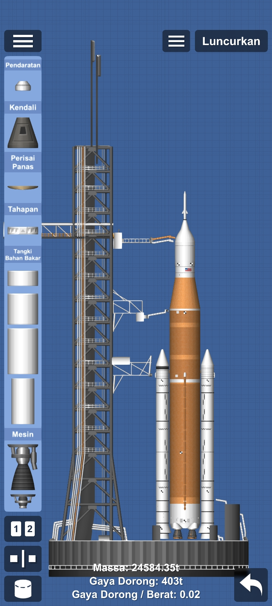
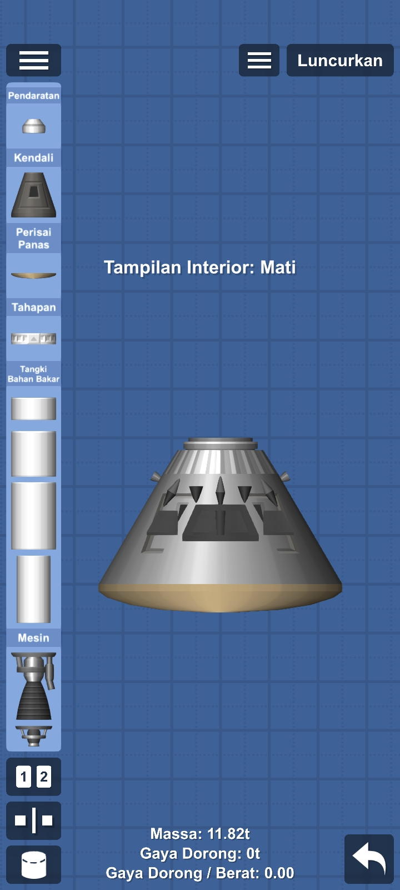
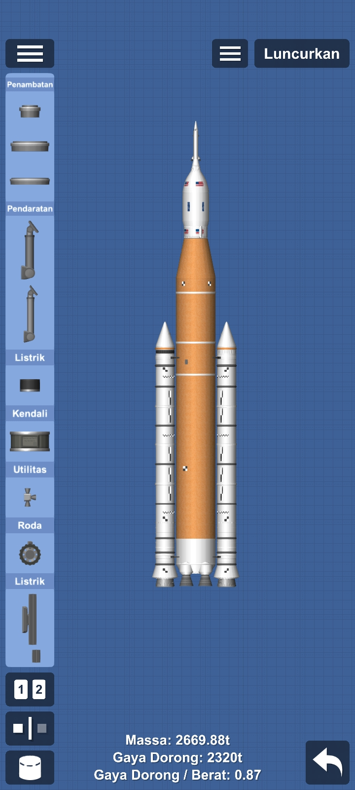
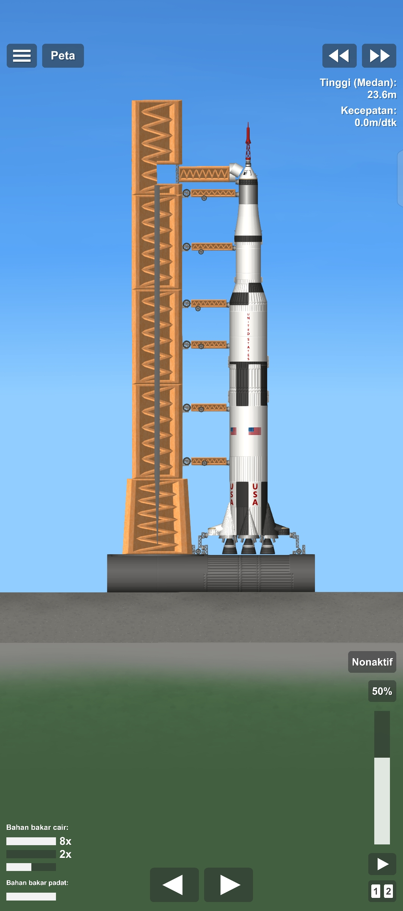

NASA Rocket
Blueprint roket dan part-part dari program NASA.

Artemis I — SLS Block 1
Space Launch System versi pertama, digunakan pada misi Artemis I tanpa awak mengelilingi bulan.

Orion Capsule
Kapsul kru Orion yang dirancang untuk membawa astronot ke orbit bulan dan permukaan bulan.

Artemis II — Crewed
Misi Artemis II dengan kru penuh mengelilingi bulan untuk pertama kalinya sejak Apollo 17.

Saturn V (Apollo 11)
Roket terkuat yang pernah dibuat. Membawa misi Apollo 11 hingga 17 ke bulan dengan tinggi 111 meter.